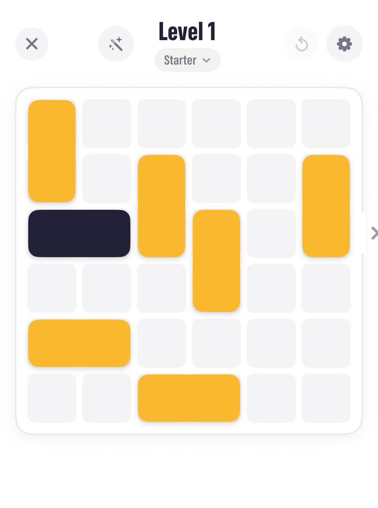
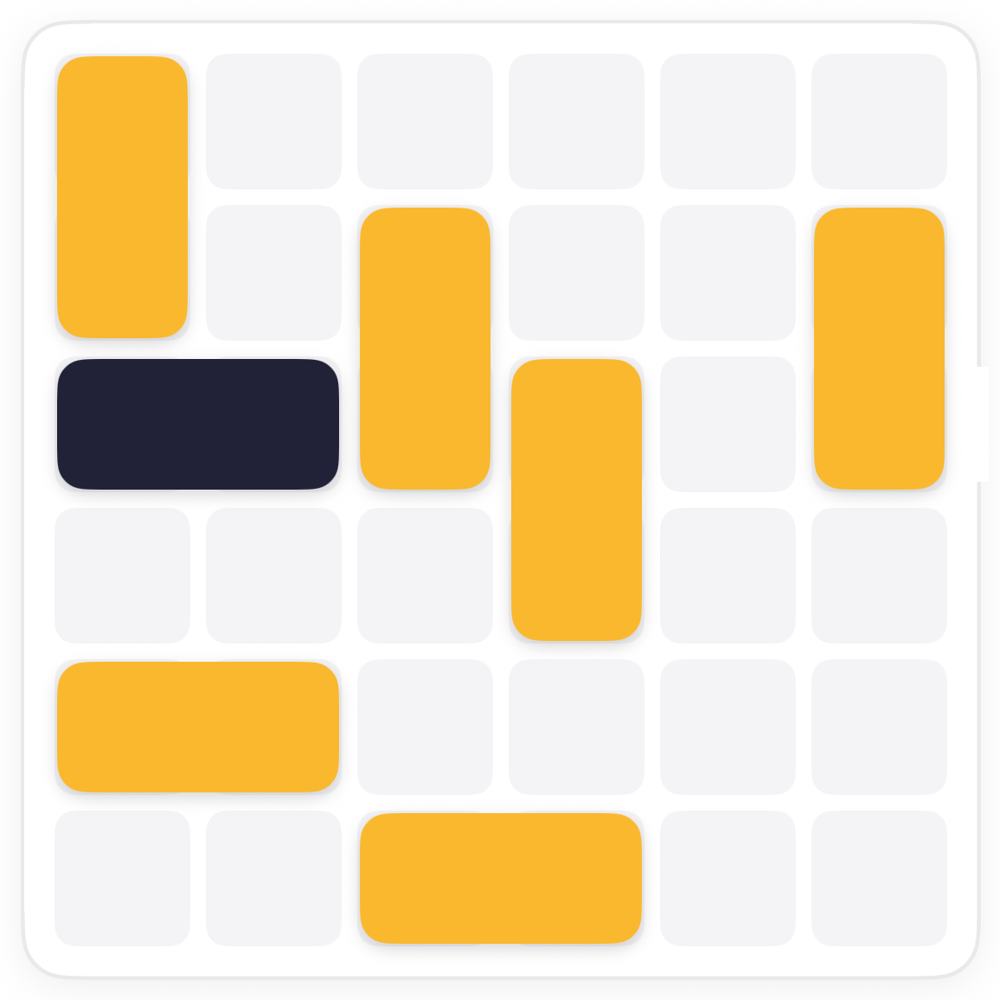
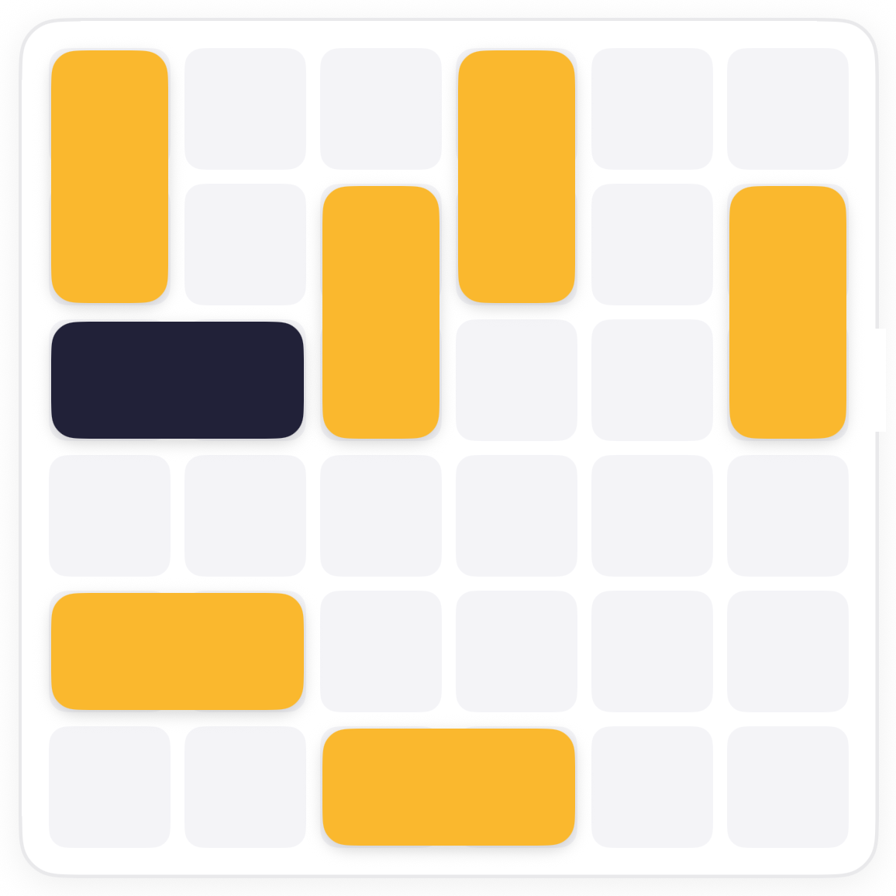
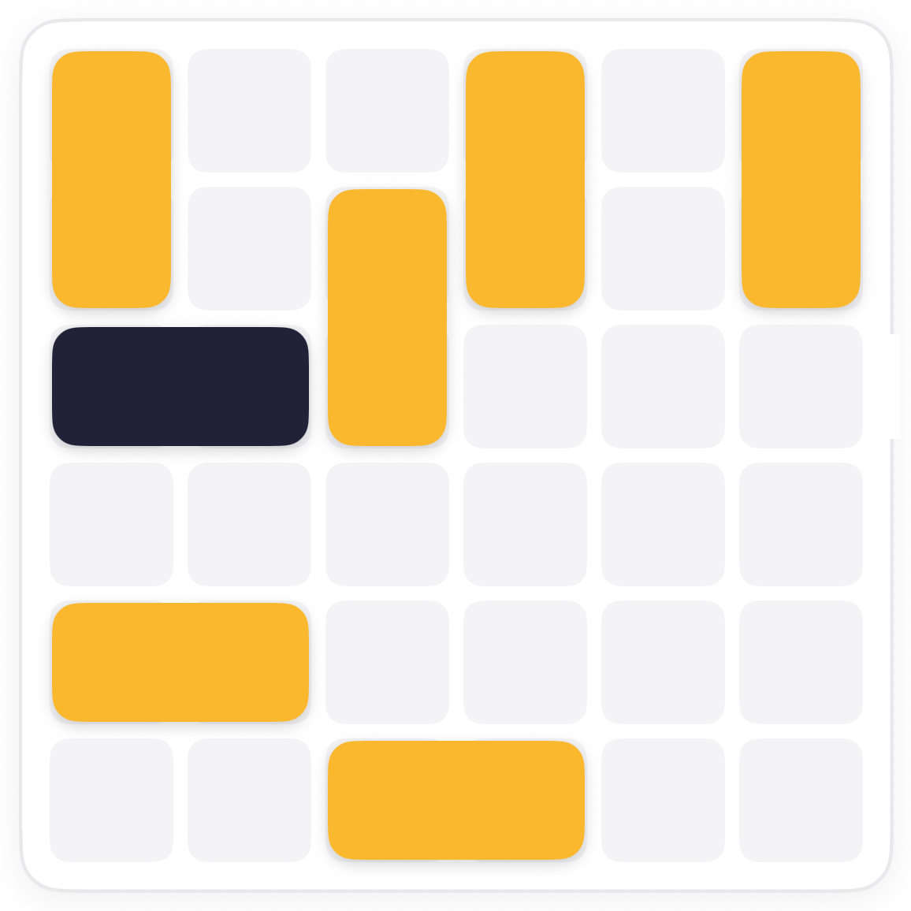
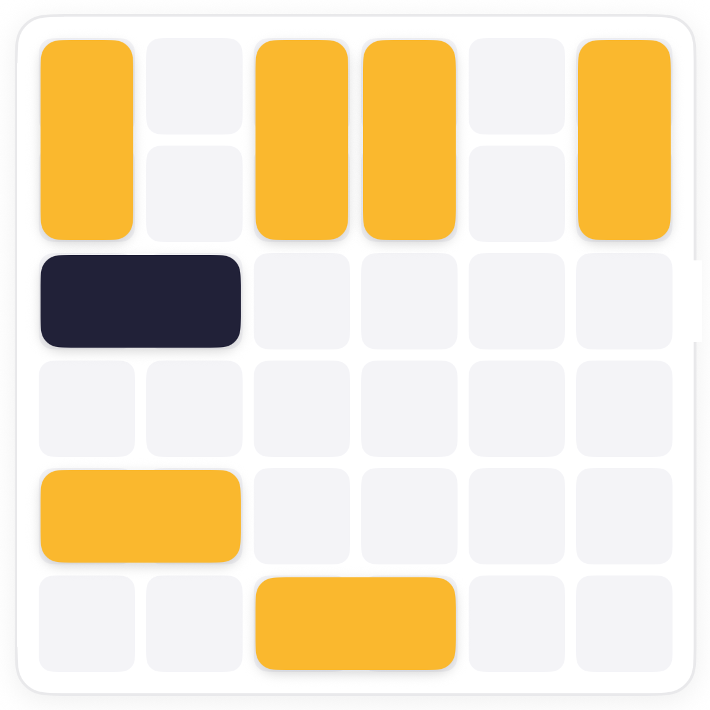
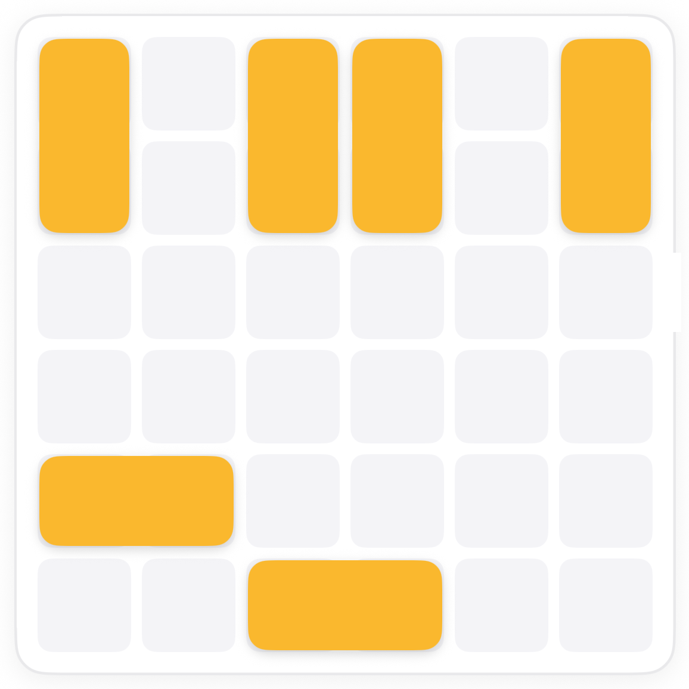

How to play Scoot.
Scoot is a sliding-block escape. The dark block wants to leave through the notch on the right, and every other block is in the way. Blocks only slide along their own length, so the order of moves is the whole puzzle.
The board.
A 6 by 6 board with yellow blocks and one dark block. The notch in the right wall is the exit, and it sits on the dark block's row. Under the board you can see your move count and the par.

The rule.
One slide, any distance, is one move. Par is the fewest moves the board can be done in.
Clear the lane.
Look along the dark block's row to the notch and list every block crossing it. Each of those has to slide clear, and some are blocked by others first. Work from the notch back.





Common questions.
Can a block slide more than one square in a move?
Yes. A slide is one move however far it goes, as long as nothing is in the way.
What if a block is boxed in?
Then something next to it has to move first. Harder boards are about finding that order; beginner boards, like this one, usually let every blocker slide straight away.